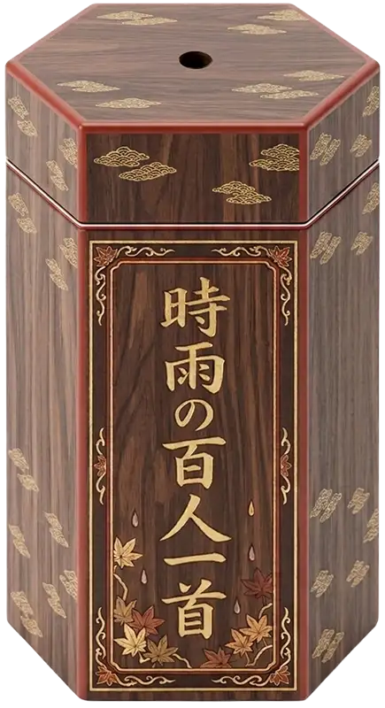
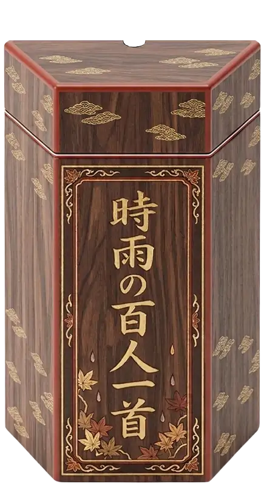

Hyakunin Isshu Fortune
One hundred poems, one hundred possible fortunes await you.
Great Fortune is rare — count yourself lucky if you draw it!


One hundred poems, one hundred possible fortunes await you.
Great Fortune is rare — count yourself lucky if you draw it!

